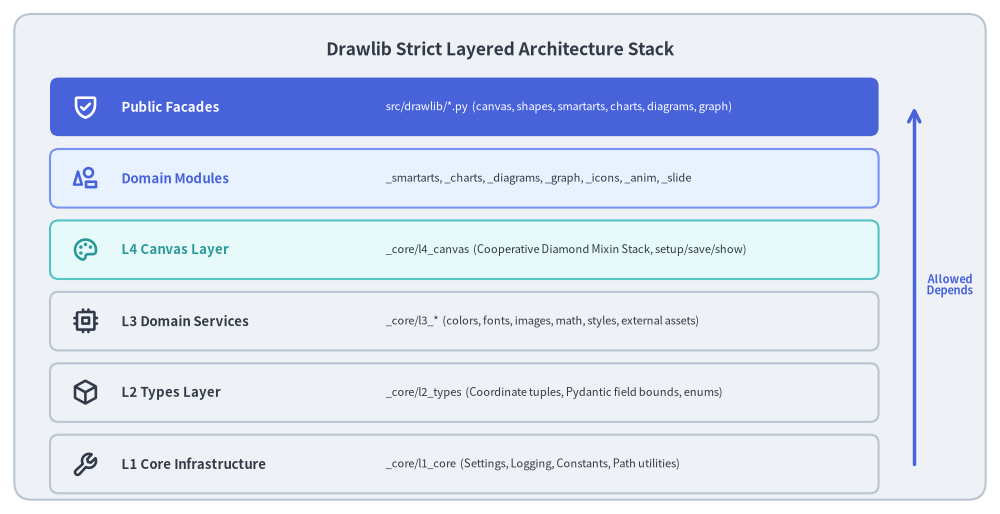
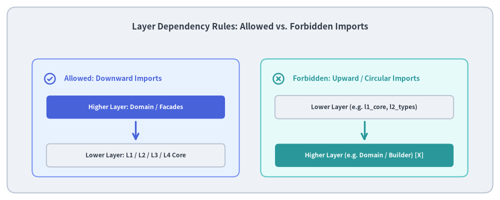

Layer Hierarchy & Architectural Rules
A drawing library faces severe architectural challenges: complex geometry transformations, stateful rendering backends, styling cascades, high-level layout algorithms, and document compilation. Without strict architectural boundaries, code quickly degrades into tangled inter-module dependencies and circular imports.
To ensure long-term maintainability, Drawlib enforces a strict Unidirectional Layered Architecture across its core drawing engine and domain subsystems.

Source Code
from drawlib.canvas import save, setup
from drawlib.icons import phosphor
from drawlib.lines import line
from drawlib.shapes import rectangle
from drawlib.styles import Styles
from drawlib.text import text
setup(width=140, height=72)
rectangle((70, 36), width=136, height=68, style=Styles.Neutral.patch(shape_r=2.5))
text(
(70, 65),
"Drawlib Strict Layered Architecture Stack",
style=Styles.DarkBold.patch(text_size=12.5),
)
layers = [
(57, "Public Facades", "src/drawlib/*.py (canvas, shapes, smartarts, charts, diagrams, graph)", Styles.PrimaryFlat, Styles.WhiteBold, phosphor.shield_check),
(47, "Domain Modules", "_smartarts, _charts, _diagrams, _graph, _icons, _anim, _slide", Styles.PrimaryNeutral, Styles.PrimaryBold, phosphor.shapes),
(37, "L4 Canvas Layer", "_core/l4_canvas (Cooperative Diamond Mixin Stack, setup/save/show)", Styles.SecondaryNeutral, Styles.SecondaryBold, phosphor.palette),
(27, "L3 Domain Services", "_core/l3_* (colors, fonts, images, math, styles, external assets)", Styles.Neutral, Styles.DarkBold, phosphor.cpu),
(17, "L2 Types Layer", "_core/l2_types (Coordinate tuples, Pydantic field bounds, enums)", Styles.Neutral, Styles.DarkBold, phosphor.cube),
(7, "L1 Core Infrastructure", "_core/l1_core (Settings, Logging, Constants, Path utilities)", Styles.Neutral, Styles.DarkBold, phosphor.wrench),
]
for y, title, desc, card_style, text_style, icon_func in layers:
rectangle((65, y), width=116, height=8.2, style=card_style.patch(shape_r=1.2))
icon_func((12, y), width=3.8, style=text_style)
text((17, y), title, style=text_style.patch(halign="left", text_size=9.5))
sub_style = Styles.White if card_style == Styles.PrimaryFlat else Styles.Dark
text((54, y), desc, style=sub_style.patch(halign="left", text_size=8.0))
# Arrow indicating unidirectional flow from L1 upwards
line((128, 7), (128, 57), arrow_head="->", style=Styles.PrimaryBold)
text((133, 32), "Allowed\nDepends", style=Styles.PrimaryBold.patch(text_size=8.0))
save()
1. Concept: Unidirectional Dependency Invariant
The fundamental law of Drawlib's codebase is Unidirectional Downward Dependency:
The Architectural Law:
A higher-level layer may import symbols from lower-level layers, but a lower-level layer must never import symbols from higher-level layers.
This principle guarantees:
- Zero Circular Dependencies: Modules can always be loaded in topological order without import deadlocks.
- Independent Testability: Lower layers (like
l1_coreandl2_types) can be unit tested without initializing graphics backends, Matplotlib figures, or complex styling trees. - Swappable Backends: The graphics rendering pipeline (
l4_canvasand Matplotlib) can be modified or extended without altering core data types or high-level layout algorithms.
2. Positioning: Layer Responsibilities Breakdown
Drawlib decomposes drawing mechanics into six discrete horizontal layers:
| Layer | Directory Path | Primary Responsibility | Upstream Consumers |
|---|---|---|---|
| Public Facades | src/drawlib/*.py |
Clean re-exports of user-facing functions and classes (canvas, shapes, styles). |
End-user drawing code & AI agents |
| Domain Modules | src/drawlib/_*/ |
High-level diagramming modules (_smartarts, _charts, _diagrams, _graph). |
Public facades |
| L4 Canvas | _core/l4_canvas |
Global Canvas context, diamond multiple inheritance feature mixins, transform stack. | Domain modules, Public facades |
| L3 Services | _core/l3_* |
Independent specialized services (l3_colors, l3_fonts, l3_images, l3_math, l3_styles, l3_external). |
L4 Canvas, Domain modules |
| L2 Types | _core/l2_types |
Functional coordinate primitives (Coordinate, Coordinates), Pydantic field bounds, enums. |
L3 Services, L4 Canvas, Domain |
| L1 Core | _core/l1_core |
Core runtime settings (dutil_settings), logging, path utilities, static asset directory constants. |
All higher layers |

Source Code
from drawlib.canvas import save, setup
from drawlib.icons import phosphor
from drawlib.lines import line
from drawlib.shapes import rectangle
from drawlib.styles import Styles
from drawlib.text import text
setup(width=140, height=56)
rectangle((70, 28), width=136, height=52, style=Styles.Neutral.patch(shape_r=2.5))
text(
(70, 48.5),
"Layer Dependency Rules: Allowed vs. Forbidden Imports",
style=Styles.DarkBold.patch(text_size=12.2),
)
# Left Column: Allowed Dependencies (Downward)
rectangle((38, 23), width=58, height=33, style=Styles.PrimaryNeutral.patch(shape_r=1.8))
phosphor.check_circle((14, 34), width=3.8, style=Styles.PrimaryBold)
text((18, 34), "Allowed: Downward Imports", style=Styles.PrimaryBold.patch(halign="left", text_size=10.0))
rectangle((38, 26), width=50, height=6.5, style=Styles.PrimaryFlat.patch(shape_r=1.0))
text((38, 26), "Higher Layer: Domain / Facades", style=Styles.WhiteBold.patch(text_size=8.8))
line((38, 22), (38, 16.5), arrow_head="->", style=Styles.PrimaryBold)
rectangle((38, 12.5), width=50, height=6.5, style=Styles.Neutral.patch(shape_r=1.0))
text((38, 12.5), "Lower Layer: L1 / L2 / L3 / L4 Core", style=Styles.DarkBold.patch(text_size=8.8))
# Right Column: Forbidden Dependencies (Upward or Cross-Domain Cycles)
rectangle((102, 23), width=58, height=33, style=Styles.SecondaryNeutral.patch(shape_r=1.8))
phosphor.x_circle((78, 34), width=3.8, style=Styles.SecondaryBold)
text((82, 34), "Forbidden: Upward / Circular Imports", style=Styles.SecondaryBold.patch(halign="left", text_size=10.0))
rectangle((102, 26), width=50, height=6.5, style=Styles.Neutral.patch(shape_r=1.0))
text((102, 26), "Lower Layer (e.g. l1_core, l2_types)", style=Styles.DarkBold.patch(text_size=8.8))
line((102, 22), (102, 16.5), arrow_head="->", style=Styles.SecondaryBold)
rectangle((102, 12.5), width=50, height=6.5, style=Styles.SecondaryFlat.patch(shape_r=1.0))
text((102, 12.5), "Higher Layer (e.g. Domain / Builder) [X]", style=Styles.WhiteBold.patch(text_size=8.8))
save()
3. Details: Layer Isolation Mechanics
3.1. Layer 1 (l1_core) — The Bedrock
l1_core has zero internal Drawlib dependencies. It relies strictly on the Python standard library:
- Runtime Settings (
_settings.py):DrawlibSettings(accessed via the singletondutil_settings) manages global verbosity ("normal","quiet","verbose","developer"), warning suppression, test mode detection, and grid overlay forcing (_force_grid). - Logging (
_logging.py): Centralized Pythonlogginginstance under the"drawlib"namespace. - Constants & Path Utils (
_const.py,_path_utils.py): Static directories for fonts, icons, maps, and rules, alongside call-stack inspection tools (get_script_path()). - Declarative Validation (No Boilerplate Exception Classes): Drawlib avoids custom exception hierarchies. Boundary validation is declared via Pydantic (
@validate_call,Field,BeforeValidator), raising standard PydanticValidationErroror built-inValueError.
3.2. Layer 2 (l2_types) — Value Primitives & Constraints
l2_types defines lightweight, functional type primitives:
- Coordinate Primitives (
_geometry.py):Coordinate = tuple[float, float],Coordinates = list[Coordinate],Bezier2, andBezier3. - Pydantic Bounds (
_primitive.py,_style.py):PosInt,PosFloat,Ratio($[0.0, 1.0]$), andAnglewith cyclic normalization modulo 360°. - Does not contain any rendering logic or Matplotlib objects.
3.3. Layer 3 (l3_*) — Domain Services
Layer 3 provides specialized domain engines that operate on l2_types without knowing about the Canvas lifecycle:
l3_colors:Color(BaseModel)immutable RGBA model,ColorTypeannotation, andColorUtillinear interpolation.l3_styles: Unified flatStyle(BaseModel)with explicit target declarations (supports: frozenset[SupportType]) andBaseStyles(BaseModel, metaclass=_BaseStylesMeta).l3_fonts: Language-specific font enums, true-type font resources, and metadata caching.l3_images:DimagePIL fluent wrapper for cropping, tinting, and scaling.l3_math: Functional 2D geometry (_geometry.py) and orthogonal path routing (_routing.py).l3_external: GitHub Release asset synchronization (ReleaseAssetPackage,AssetManifest, deterministic.zipgenerator).
3.4. Layer 4 (l4_canvas) — Canvas & Graphics Bridge
l4_canvas brings together all lower layers to manage the active drawing canvas:
- Terminal
Canvasclass composed through cooperative diamond multiple inheritance (CanvasBase+ 7 feature mixins). - Coordinates calls between user drawing operations and Matplotlib patch primitives.
- Exposes
setup(),save(),show(), and thetransform()context manager.
3.5. Automated Enforcement in CI/CD
This layering invariant is strictly enforced:
- Ruff Linting: Rejects cyclic imports and invalid cross-module references.
- Ty Type Checking: Verifies that lower-layer type signatures never leak higher-layer classes.
- Run verification at any time via:
./dcli code-check type
Continue to Canvas & Geometry to inspect the core drawing engine.